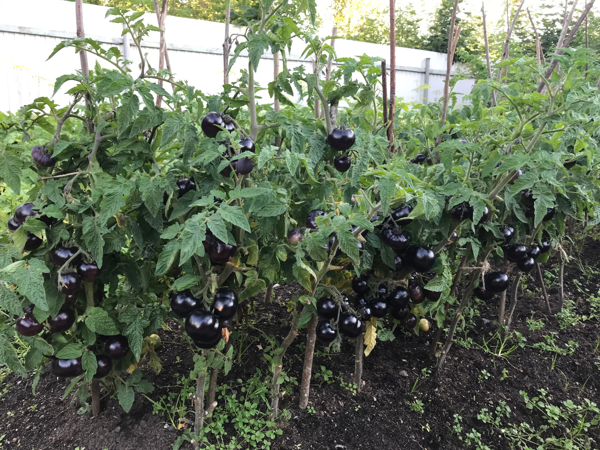
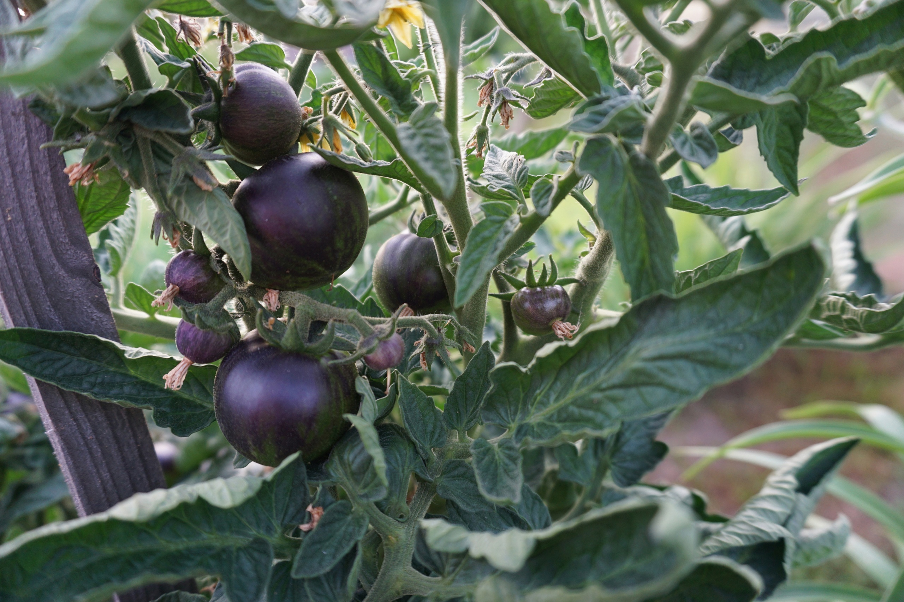

Общее впечатление
Томат Блэк Бой с первых дней своей жизни отличался от всех своих родственников томатов. Он коренастый и мощный – настоящий штамбовый сорт! Такие томаты встречаются крайне редко – обычно это высокие и мощные индетерминантные растения больше подходящие для выращивания в теплицах.
Фиолетовый оттенок стебля и листьев не оставляет сомнения, что это томат с фиолетовыми плодами, относящийся к группе целебных-антоциановых. Получается, что он не только накормит, но и уменьшит риск сердечно-сосудистых заболеваний, улучшит остроту зрения, укрепит кровеносные сосуды.
А еще растение очень декоративно. Это небольшое деревце с круглыми блестящими плодами необычного черно-фиолетового цвета массой до100 г. Прекрасно выглядит в контейнерах и горшках.
Особенности сорта
Как показало тестирование, томат Блэк Бой выглядит типично именно в открытом грунте, при высоком освещении. Выращивание в теплице и на застекленном балконе привело к вытягиванию растения и слабому завязыванию плодов.
Необычный черно-фиолетовый цвет плодов максимально проявляется при попадании солнечных лучей на плоды. Если плод будет в тени или прикрыт листьями – он будет зеленым.
Тестирование в различных регионах, а это Кузбасс, Вологодская область и Ленинградская область, показало высокую холодостойкость сорта Блэк Бой. Практически у всех участников эксперимента рассада после высадки попала под заморозки и экстремальные погодные условия – град, дожди. Однако растения не погибли. Часть растений была сильно повреждена – зафиксировано отмирание до 80% вегетативной части растения. При этом наступила быстрая регенерация и восстановление растений.
Например, Л.Гарпиненко пишет: “В июне на них обрушились ливни, град и возвратные заморозки. Блэк Бой желтел, синел, но выстоял, и даже плоды завязались. Но затем томаты Блэк Бой наверстали упущенное, стали активно расти, выпускать многочисленные пасынки и дружно цвести.”
По данным Л.Кушниковой, томатики лучше развиваются в открытом грунте, чем в теплице, а темно-фиолетовая листва и плоды с фиолетовым отливом покоряют своей красотой! «Такого чуда у меня ещё не было! Кусты настолько мощные и крепкие, что росли без опоры, дали много цветочных кистей и быстро наливались.”
Выращивание
Сроки посева семян на рассаду зависит от региона возделывания. Для условий Ленинградской области лучший срок – первая декада апреля. Этот срок позволяет получить крепкую рассаду с 4-5 настоящими листьями и бутонами первой кисти. Сорт рекомендован для выращивания в открытом грунте. Все участники теста пробовали разные варианты выращивания, проявив характер настоящих исследователей. Блэк Бой выращивался в горшках, на застекленном балконе, в теплице и в открытом грунте. Было отмечено, что лучший результат был достигнут именно в открытом грунте.
Рассада высаживалась в первой декаде мая в грунт без дополнительных укрытий. При высадке проводится обильный полив под каждое растение. Процесс привыкания к новым условиям занимает, как правило, две недели. Затем томат начинает интенсивно расти, формируя новые листья и побеги. Нижние боковые побеги (пасынки) до 3-го листа лучше удалить. Это не даст зарасти растению лишней зеленью и обеспечит свободную циркуляцию воздуха в нижней части растения, что предотвратит появление грибных и бактериальных болезней. В дальнейшем формирование уже не требуется. Можно удалять старые пожелтевшие листья или часть листьев из середины куста, чтобы заложившиеся плоды освещались равномерно.
У томата Блэк Бой плоды в технической спелости черно-фиолетовые, с зеленым бочком. Созревшие плоды темно-малиновые с черно-фиолетовыми плечиками. Как показал опыт, собирать можно и не полностью созревшие плоды – они прекрасно дозревают в домашних условиях.